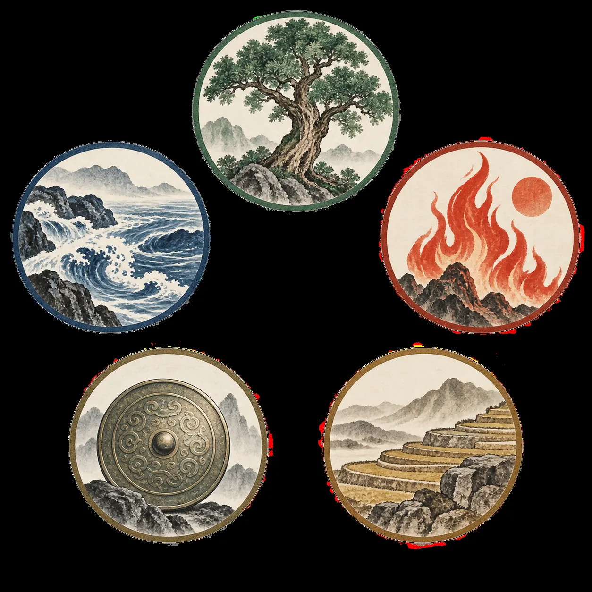

基礎語言
五行干支理解生剋、十天干與十二地支，看到符號能立刻辨認屬性。
不要從吉凶口訣開始。先知道每一層在回答什麼，再慢慢增加細節。
理解生剋、十天干與十二地支，看到符號能立刻辨認屬性。
熟記宮位、方向與五行。九宮是後續所有判斷的座標。
八門看行動，九星看環境，八神看隱微因素，奇儀看具體關係。
先取用神，再看落宮、組合、旺衰和彼此生剋，最後才下結論。
圖片幫你記形象；真正判斷時，使用下面固定的生剋順序。

讀盤時先問：「誰生誰？誰剋誰？」生不一定永遠好，也可能是付出與洩耗；剋也不一定永遠壞，也可能代表掌控。
上南下北、左東右西。點一個宮位，右側會顯示記憶重點。
先記核心方向，不要一次背完整萬物類象。八門圖從左到右依固定順序排列。

智慧、策劃，也有暗昧與冒險。
問題、疾病、學習與承擔。
果斷、速度、開拓與衝動。
文書、教育、協助與貴人。
中正、穩定、統合與承載。
領導、技術、治理與醫藥。
口舌、破壞、壓力與支撐。
務實、信用、緩慢與穩固。
文明、名聲、亮眼與是非。
權威、主導、貴人與正面力量。
纏繞、疑慮、虛幻與反覆。
細密、隱蔽、暗助與內在。
合作、連結、交易與關係。
壓力、猛烈、傷害與執行。
隱情、資訊、欺瞞與流動。
低調、穩守、落地與緩慢。
高遠、擴張、聲勢與行動。
每次都照同一順序，避免看到單一凶象就急著下結論。
一盤只處理一個具體問題，時間與情境要清楚。
日干代表自己；工作看開門，財利看生門，合作看六合。
先看用神在哪一宮、宮的五行與是否空亡。
把門、星、神、天地盤干一起看，不拆成孤立吉凶。
比較用神宮和日干宮，最後才形成可驗證的判斷。
勾選完成項目會保存在這台裝置。右邊翻卡會隨機抽題。
完成 0／6
學習範圍：時家轉盤奇門、拆補法。不同派別在起局、換日、寄宮等細節可能不同，初學階段不要混用。